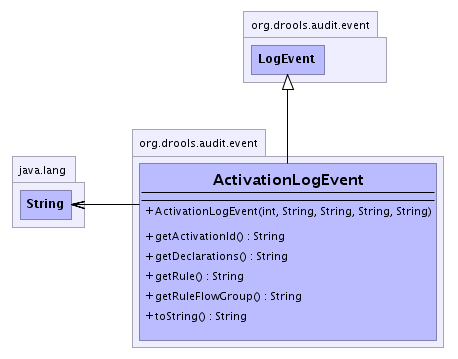

org.drools.audit.event
Class ActivationLogEvent
java.lang.Object
 org.drools.audit.event.LogEvent
org.drools.audit.event.ActivationLogEvent
org.drools.audit.event.LogEvent
org.drools.audit.event.ActivationLogEvent
public class ActivationLogEvent
- extends LogEvent
An activation event logged by the WorkingMemoryLogger.
It is a snapshot of the event as it was thrown by the working memory.
It contains the activation id, the name of the rule and a String
representing the declarations of the activation, which is a list of
name-value-pairs for each of the declarations in the tuple of the
activation. The name is the identifier (=name) of the
declaration, and the value is a toString of the value of the
parameter, followed by the id of the fact between parentheses.
e.g. param1=10; param2=Person[John Doe]
Such a String representation is used to create a snapshot of the
current state of the activation by storing a toString of the facts
bound in the activation. If necessary, this event could be extended
to contain a map of declarations too.
-
- 
| Fields inherited from class org.drools.audit.event.LogEvent |
ACTIVATION_CANCELLED, ACTIVATION_CREATED, AFTER_ACTIVATION_FIRE, AFTER_PACKAGE_ADDED, AFTER_PACKAGE_REMOVED, AFTER_RULE_ADDED, AFTER_RULE_REMOVED, BEFORE_ACTIVATION_FIRE, BEFORE_PACKAGE_ADDED, BEFORE_PACKAGE_REMOVED, BEFORE_RULE_ADDED, BEFORE_RULE_REMOVED, INSERTED, RETRACTED, RULEFLOW_COMPLETED, RULEFLOW_CREATED, RULEFLOW_GROUP_ACTIVATED, RULEFLOW_GROUP_DEACTIVATED, UPDATED |
|
Constructor Summary |
ActivationLogEvent(int type,
java.lang.String activationId,
java.lang.String rule,
java.lang.String declarations,
java.lang.String ruleFlowGroup)
Create a new activation log event. |
|
Method Summary |
java.lang.String |
getActivationId()
Returns a unique id for the activation. |
java.lang.String |
getDeclarations()
Returns a String representation of the declarations in the
activation. |
java.lang.String |
getRule()
Returns the name of the rule of the activation. |
java.lang.String |
getRuleFlowGroup()
|
java.lang.String |
toString()
|
| Methods inherited from class java.lang.Object |
clone, equals, finalize, getClass, hashCode, notify, notifyAll, wait, wait, wait |
ActivationLogEvent
public ActivationLogEvent(int type,
java.lang.String activationId,
java.lang.String rule,
java.lang.String declarations,
java.lang.String ruleFlowGroup)
- Create a new activation log event.
- Parameters:
type - The type of event. This can only be ACTIVATION_CREATED, ACTIVATION_CANCELLED,
BEFORE_ACTIVATION_FIRE or AFTER_ACTIVATION_FIRE.activationId - The id of the activationrule - The name of the rule of the activationdeclarations - A String representation of the declarations in the
activation.
getActivationId
public java.lang.String getActivationId()
- Returns a unique id for the activation.
- Returns:
- The id of the activation
getRule
public java.lang.String getRule()
- Returns the name of the rule of the activation.
- Returns:
- The name of the rule
getDeclarations
public java.lang.String getDeclarations()
- Returns a String representation of the declarations in the
activation.
- Returns:
- A String representation of the declarations.
getRuleFlowGroup
public java.lang.String getRuleFlowGroup()
toString
public java.lang.String toString()
- Overrides:
toString in class java.lang.Object